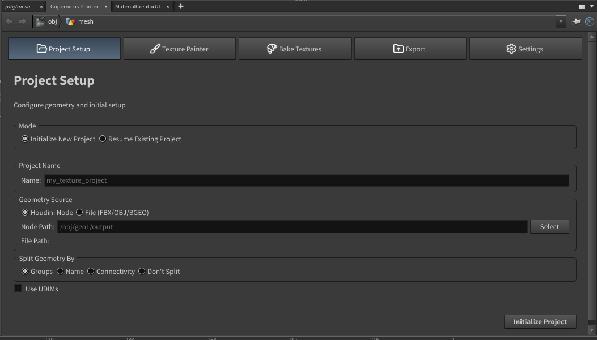
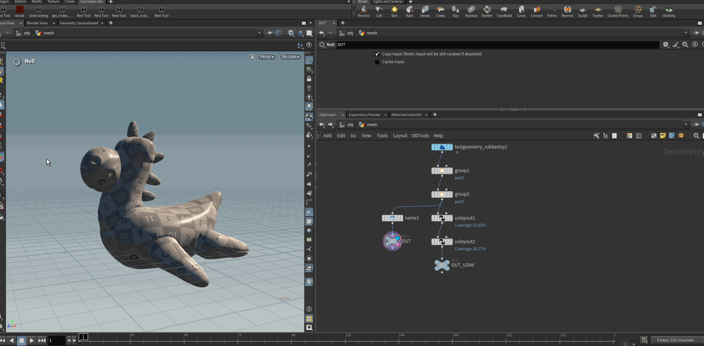
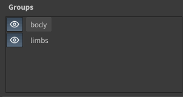
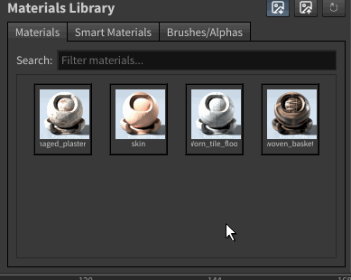
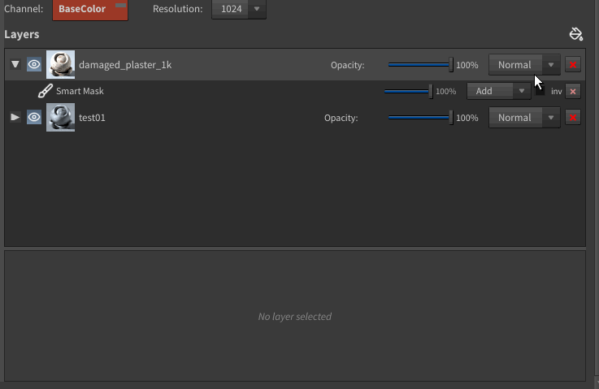
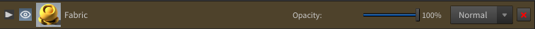
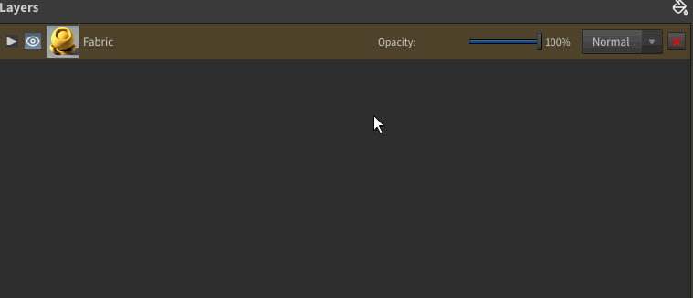
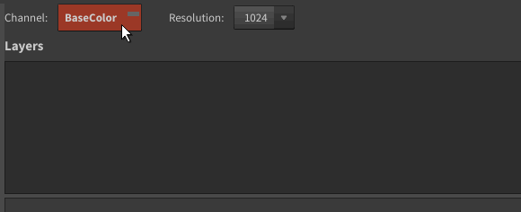
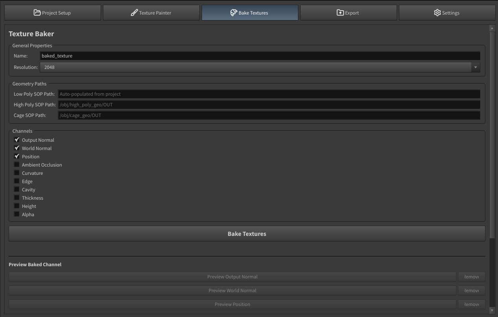
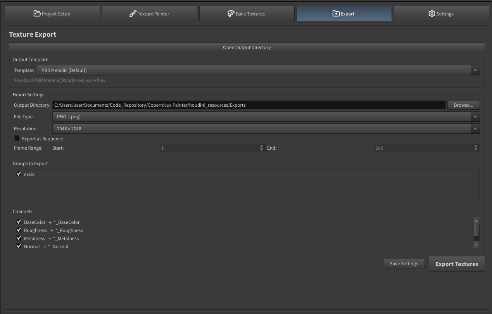

Workflow: Create, Paint, Bake, Export
This page walks through a full texturing session from start to finish.
1. Project Setup


Open the Project Setup tab and fill in the following:
| Field | Description |
|---|---|
| Project Name | Name for the project node that will contain all the SOP and COP network nodes |
| Geometry Source | Path to the SOP node containing your mesh |
| Split Geo | Enable to split the mesh into separate groups (body, head, arms, etc.) |
| Use UDIMs | Enable UDIM mode — each UV tile becomes a separate texture set (standard by default) |
Note: The source geometry must have vertex UVs and normals (vertex or point) before initializing.
Click Initialize Project to create the Houdini COP network and set up the layer stack.
2. Texture Painter
The Texture Painter tab is the main workspace. It is divided into:
Groups Panel (top-left)

Shows the groups detected from the geometry (e.g. body, head). Click a group to switch the layer stack to that group. Toggle the eye icon to show/hide a group in the viewport. Double-click on the name to rename the group.
Materials Library (bottom-left)

Three tabs:
- Materials — drag-and-drop material folders onto the layer stack
- Smart Materials — drag-and-drop smart material presets onto the layer stack (saved as .cpio presets)
- Brushes/Alphas — select an alpha stamp for mask painting
Use the ↻ Refresh button to reload the library after adding files to disk (useful if you create new materials or alphas while working in Copernicus Painter). Toggle icon size with the size buttons in the top-right of the panel.
Layer Stack (right)

Layers are listed top-to-bottom; the top layer is on top of the composite. Each layer row shows:
- Expand toggle — shows or hides the mask list for that layer
- Visibility eye — show/hide the layer
- Icon — material thumbnail
- Name — double-click to rename
- Opacity slider
- Blend mode dropdown (Normal, Multiply, Add, Overlay, Screen)
- Delete button

Adding a layer: drag a material from the library onto the stack.
Reordering layers: drag a layer row up or down.
Mask Layers

Expand a layer to see its masks. To add a mask, right-click the material bar → Add Mask and choose a mask type:
| Mask Type | Description |
|---|---|
| Paint Mask | Paint directly onto the mesh in the Houdini viewport |
| Fill Mask | Flood-fills the entire UV space with a flat value |
| Mesh Fill | Fills based on UV island selection |
| Smart Mask | Applies a .cpio procedural mask preset |
| Grunge | COP-based procedural grunge generator (aurora, cells, cloud, flow, static) |
Each mask has: - Invert checkbox — flip the mask value - Opacity slider - Blend mode dropdown - Delete button
Click a mask row to select it and open its properties in the Properties Panel below.
Layer Properties Panel
Shows transform and parameter controls for the selected layer or mask:
- Tiling U / V — texture tiling
- Offset X / Y — texture offset
- Rotation — texture rotation angle
- Projection — UV projection mode
- For paint masks: brush size, softness, opacity, alpha stamp settings
- Smart materials can expose additional parameters — these come from the promoted parameters on the smart material's subnet.
Channel and Resolution

At the top of the right column:
- Channel — selects which texture channel is active (Base Color, Roughness, Metallic, Normal, Height, etc.)
- Resolution — sets the output texture resolution (512 / 1024 / 2048 / 4096)
Undo / Redo
Use Ctrl+Z / Ctrl+Shift+Z (or Houdini's standard undo) to undo/redo operations. The UI syncs automatically.
3. Bake Textures

The Bake Textures tab bakes geometry-based maps (world normals, ambient occlusion, curvature, etc.) using Houdini's bakegeometrytextures node.
General Properties
| Field | Description |
|---|---|
| Name | Base name for the baked texture files |
| Resolution | Output resolution for baked maps |
Geometry
| Field | Description |
|---|---|
| Low | SOP path to the low-poly mesh (the one being textured) |
| High | SOP path to the high-poly mesh (optional, for normal transfer) |
| Cage | SOP path to the cage mesh (optional) |
Channels
Enable the channels you want to bake (Normal, AO, Curvature, Position, etc.).
Bake
Click Bake Textures to run the bake. Progress is shown in the panel. When complete, use Preview Baked Channel to inspect the result in the viewport.
4. Export

The Export tab renders the final layered textures to image files on disk.
Export Settings
| Field | Description |
|---|---|
| Output Directory | Root folder where textures are written |
| File Type | Output format: PNG, EXR, TIFF, JPG |
| Resolution | Override resolution for export (or match project resolution) |
| Export as Sequence | Enable to export an image sequence; set the frame range start/end |
Groups to Export
Check which UV groups to include in the export.
Channels
Select which texture channels to export (Base Color, Roughness, Metallic, Normal, Height, etc.).
Export
Click Save Settings to store the current export configuration, then Export Textures to write the files to disk.
After export, click Open Output Directory to open the output folder in your file explorer.